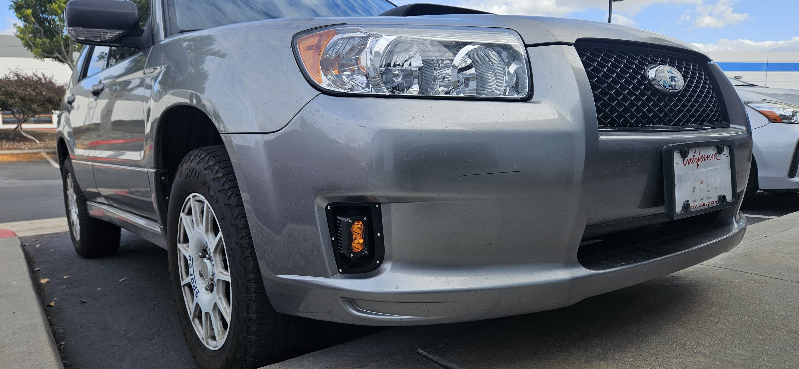

SMITHtRONiC SG Sports Bumper Amber Light Kit
A custom auxiliary light kit designed for the Forester SG Sports bumper—seamless fit, adjustable beam, and plug-and-play installation.
Overview:
One of the biggest challenges for owners of the 2006-2008 Subaru Forester Sports has been the lack of a factory or aftermarket fog light solution for the unique sports bumper. Unlike the standard SG Forester, which comes with integrated fog lights, the Sports model features blank covers in the bumper’s lower corners—giving the appearance of functional ducts but leading to empty space.
With no existing aftermarket solution, I designed and engineered a flush-mounted auxiliary light kit specifically for this bumper. This kit seamlessly integrates into the space, providing a clean, factory-like appearance while offering real functionality.
Design & Features:
Seamless Fitment: The housings are designed to fit perfectly within the SG Sports bumper without requiring excessive modifications.
Adjustable Beam Positioning: The bracket design allows for both horizontal and vertical articulation, ensuring proper aim for optimal road visibility.
Durable Construction: Made entirely from ASA plastic for heat and UV resistance, paired with stainless steel hardware for longevity.
Plug-and-Play Integration: The included wiring uses the factory Subaru harness, making installation straightforward with minimal effort.
Minimal Drilling Required: The housing is secured using six small M3 stainless steel bolts, requiring only minor drilling into the bumper for a solid mount.
DIY vs. Pre-Assembled Kit:
I offer two versions of this kit to accommodate different user needs:
Pre-Assembled Kit – Includes pre-wired amber LED lights, ready to install out of the box.
DIY Kit – Allows users to supply their own lights, making it compatible with various aftermarket lighting options that use a single mounting bolt.
Installation & Compatibility:
The kit is designed for Forester SG Sports bumpers and is not compatible with standard SG Forester bumpers. Installation is straightforward, and I provide a detailed step-by-step install guide to make the process as simple as possible.
Why This Kit Matters:
Subaru enthusiasts love the SG Forester Sports for its unique styling, but the lack of fog lights has always been a drawback. This kit finally provides a dedicated solution for owners who want both a functional auxiliary lighting option and a clean, OEM+ aesthetic.
Final Thoughts:
I designed this kit not just as a product but as a passion project, filling a gap in the Subaru aftermarket that has long been overlooked. With limited batch production, each kit is hand-assembled and made to order, ensuring quality and precision for every customer.
If you own an SG Sports Forester, this is the perfect lighting upgrade to enhance both function and form. Check out the shop page for more details!
